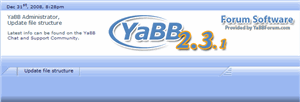

Upgrading from YaBB 2.x
If you are trying to upgrade your existing YaBB 2 installation, there are a few simple steps that need to be taken in order to correctly complete the process. Before you begin, however, please make sure you have a full backup of your working YaBB. It is also advised that you inform your users you will be upgrading before you begin.
As soon as you are ready, place your existing forum into maintenance mode. In YaBB 2.1 by going into your Admin Center under the section titled "Forum Configuration", click the link "Forum Settings". There you will see a checkbox with the label "Maintenance Mode". Check this box and save the change. In YaBB 2.2.x, once in Admin Center, scroll down the left side Menu, click on "Maintenance Settings", check "Maintenance Mode?" and save the change.
Upgrading
- If you are upgrading from YaBB 2.3 or higher you can use the upgrade package we provide to download and follow the instructions in the README_UPDATE.txt in that package. You will not need the files in this package here and you can stop reading here now.
- If you are upgrading from a "beta" version of YaBB 2.0, OR if you are upgrading from a YaBB 2.0 beta earlier than YaBB 2.0 Pre-Release, see this post in the YaBB Codex for further instructions on how to proceed before continuing.
- If you are upgrading from YaBB 2.1 or later, you will need to install a completely new version of YaBB 2.5 AE forum.
- Go to the Installation section of this Quick Guide and follow all steps up through "Step 4 - Setting Up", including point 5 (which has you run the Setup program on the new forum). Then return here to the next step below.
- Your NEW forum is already in Maintenance Mode now, leave it that way while you complete the following steps.
- Be sure your OLD forum is in Maintenance Mode too.
Versions 2.2 and later are described above, versions 2.1 and earlier, the Maintenance Mode setting is at the top of the Forum Configuration/Forum Settings page. - Using your FTP program or File Manager, copy the following files from your OLD forum into the same folders in your NEW forum:
- cgi-bin/yabb2/Boards/* (all files)
- cgi-bin/yabb2/Members/* (all files)
- cgi-bin/yabb2/Messages/* (all files)
- public_html/yabbfiles/Attachments/* (all files)
Note:
If your forum is very big it may take many time to copy all the files from the four folders above. In this case it may be easier to just move the old folders from your old forum to the new forum. To do that, first verify your old forum's four folders each contain a .htaccess file and a default.html file. If not, copy just these two files from your new forum's folders into the old forum's folders, then delete the four folders in your new forum and move then the old folders to the new forum. - cgi-bin/yabb2/Variables/* all files EXCEPT the following files:
- Menu0.def, Menu1.def, Menu2.def
- *.helporder (all files with this extension. Note: Your version may not contain these files.)
- advsettings.txt
- secsettings.txt
- Settings.pl
Now copy the following files to a separate folder and rename them as it is shown here:- advsettings.txt => upgrade_advsettings.txt
- secsettings.txt => upgrade_secsettings.txt
- Settings.pl => upgrade_Settings.pl
- If you have any special template files, you may wish to upload those files also, but they will need some modification before they will work properly with YaBB 2.5 AE.
Note:
If you plan on keeping your old YaBB 2.x Templates and CSS settings, do not copy over the new template files with older templates of the same file name or you will not get what you expect. These files have changed, so you will either have to modify the new template/css files that come with YaBB 2.5 AE, or follow the procedures in the link below to update your existing template files before overwriting the YaBB 2.5 AE template/css files.
We recommend you create a new folder in your new forum: cgi-bin/yabb2/Templates/new_folder_name/ and put your old template files (html) in it. Now rename the .html file to new_folder_name.html. Rename also your old CSS file to new_folder_name.css and put it in the public_html/yabbfiles/Templates/Forum/ directory. Repeat this for each of your existing custom templates in your old forum. Template and CSS Comparisons from earlier versions to YaBB 2.5 AE
- Once the uploading is complete, DO NOT visit your new forum just yet. If you are upgrading from a beta version of YaBB 2.0 earlier than YaBB 2.0 Pre-Release, specifically versions YaBB 2 RC 1, YaBB 2 RC 2, or YaBB 2 RC 3, then point your browser window to FixFile.pl and run this utility. This will update the file structure for your YaBB 2 data. If not, skip to step 10.
- As soon as FixFile.pl has finished, delete that file so it cannot be run again!
- Now verify CHMODs for all your imported files.
- Log in your new forum as Administrator with the Admin username and password you used in your old forum and go directy to the "Admin Center" => "Forum Settings".
Note: doing ANY upgrade, it is very important to change the install date in the Admin Center > Forum Settings to a date and time "before" the older forums oldest member registration. If not done, Search will not function and the possibility of causing ex-members being generated. Save this page once with the Button at the bottom. - Then go to "Admin Center" => "Maintenance Controls" and run the "Rebuild Notifications Files" first!
Now run the other Maintenance Controls starting with "Rebuild Message Index" going through "Rebuild Members History." - Go to ALL tabs in the "Forum Settings" and "Advanced Settings" sections and verify all your settings. There are many new settings in version 2.5 AE, so take your time here. Click the Save button at the bottom of each page even if you do not change any settings on the page.
- Go to "Maintenance Settings" and turn "Maintenance Mode?" off. Return to your forum. Refresh the page or clear the browser chache and start enjoying your brand new YaBB 2.5 AE Forum!
Note:
If you did allow users to get Email notification on new "Notifications" or new "PM" before you updated, you will have to set these settings again as new in your "Profile" => "Options" and "PM Preferences". If no other users logged in before you ran the "Rebuild Notifications Files" maintenance function, you (the Admin) will be the only one who has to reset these as new settings.